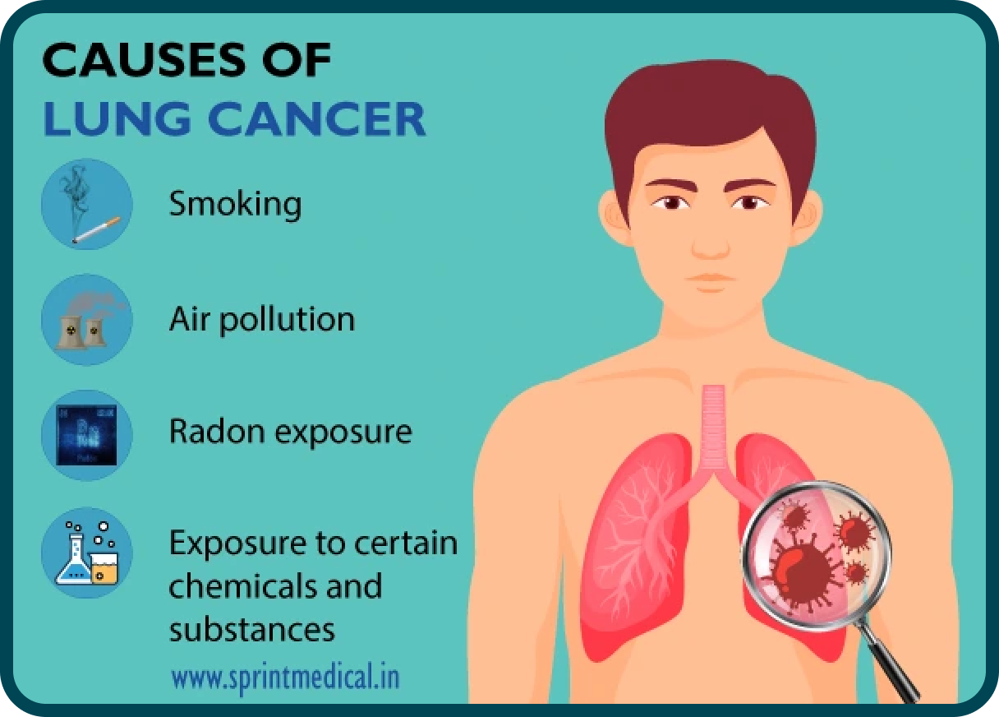

Le cancer du poumon est l’un des cancers les plus fréquents dans le monde, touchant environ 2,2 millions de personnes chaque année. Il se développe à partir de cellules anormales dans les tissus pulmonaires, qui se multiplient de manière incontrôlée et peuvent former des tumeurs. On distingue généralement deux grands types : le cancer du poumon à petites cellules, plus agressif et moins fréquent, et le cancer du poumon à non petites cellules, qui représente environ 85 % des cas.
Chaque année, le cancer du poumon cause environ 1,8 million de décès dans le monde, ce qui en fait la principale cause de mortalité par cancer chez les hommes et les femmes. Les pays à forte consommation de tabac ou exposés à une pollution atmosphérique élevée présentent les taux les plus élevés.
Ce cancer est souvent diagnostiqué tardivement, car les symptômes apparaissent généralement à un stade avancé. La recherche continue d'améliorer les traitements et le dépistage pour augmenter les chances de survie.
Le facteur de risque majeur reste le tabagisme. La fumée de cigarette contient plus de 70 substances cancérigènes qui endommagent l’ADN des cellules pulmonaires. Selon l’OMS, près de 85 à 90 % des cancers du poumon sont directement liés au tabac.
Les non-fumeurs ne sont pas totalement à l’abri. L’exposition au tabagisme passif, à la pollution de l’air ou à certains produits chimiques (comme l’amiante) augmente le risque. Par exemple, les particules fines PM2,5 présentes dans l’air ambiant sont associées à un sur-risque de cancer pulmonaire, selon l’American Cancer Society.
D’autres facteurs peuvent intervenir : prédispositions génétiques, maladies pulmonaires chroniques, expositions professionnelles à des substances cancérogènes (radon, arsenic, hydrocarbures aromatiques polycycliques).
Les symptômes apparaissent souvent tardivement et peuvent inclure :
Le dépistage peut sauver des vies en détectant le cancer à un stade précoce. Les personnes à risque (fumeurs de longue durée, plus de 55 ans, antécédents familiaux) peuvent bénéficier d’un scanner basse dose (LDCT). Ce test permet de détecter des nodules pulmonaires avant l’apparition de symptômes, augmentant significativement les chances de succès du traitement.
La surveillance médicale régulière, combinée à une attention particulière aux changements respiratoires, reste essentielle.
La prévention repose sur plusieurs axes :
Les pays qui appliquent strictement ces mesures affichent des taux d’incidence nettement plus faibles. L’éducation et la prévention dès le plus jeune âge restent des leviers essentiels pour réduire le fardeau du cancer du poumon à l’échelle mondiale.
Informations fiables en français sur le cancer et la prévention.
Voir le site